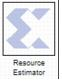

|
|
The Xilinx Resource Estimator block provides fast estimates of FPGA resources required to implement a System Generator subsystem or model.These estimates are computed by invoking block-specific estimators for Xilinx blocks, and summing these values to obtain aggregated estimates of lookup tables (LUTs), flip-flops (FFs), block memories (BRAM), 18x18 multipliers, tristate buffers, and I/Os.Every Xilinx block that requires FPGA resources has a mask parameter that stores a vector containing its resource requirements. The Resource Estimator block can invoke underlying functions to populate these vectors (e.g. after parameters or data types have been changed), or aggregate previously computed values that have been stored in the vectors. Each block has a checkbox control Define FPGA area for resource estimation that short-circuits invocation of the estimator function and uses the estimates stored in the vector instead.An estimator block can be placed in any subsystem of a model. When another estimator block is situated in the sub-hierarchy below an estimator, the blocks interact as described below.